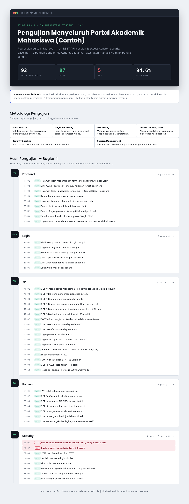
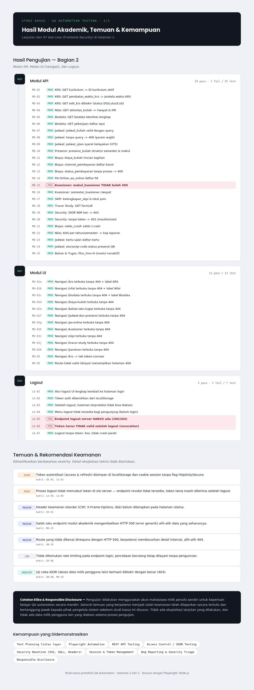

Membangun dan mengelola framework otomasi pengujian untuk platform akademik Sika Universitas. Mengotomatiskan test case kritis untuk meningkatkan efisiensi QA, mengurangi regresi, dan memastikan kualitas rilis yang konsisten.
Sika Universitas adalah platform akmodik yang melayani ribuan pengguna — dosen, mahasiswa, dan admin. Dengan siklus rilis yang cepat dan banyaknya fitur modul, manual testing mulai menjadi bottleneck. QA Automation hadir untuk menangani regression testing yang repetitive, mempercepat feedback loop, dan memastikan setiap deployment tidak merusak fitur yang sudah ada.
Gue ambil peran QA Automation Engineer untuk merancang framework dari nol, menulis test script, dan membangun pipeline yang bisa jalan otomatis setiap ada perubahan kode.
Merancang struktur framework yang scalable dengan page object model, reusable components, dan konfigurasi environment yang fleksibel.
Menulis test script end-to-end untuk alur kritis: login, input nilai, pengajuan cuti, monitoring kehadiran, dan manajemen akun.
Mengintegrasikan test otomasi ke dalam pipeline CI/CD sehingga setiap perubahan kode otomatis diuji sebelum deployment ke production.
Membuat laporan hasil test yang jelas — pass/fail rate, coverage, dan detail error — agar tim dev bisa langsung tahu area yang perlu diperbaiki.
Menganalisis test case manual yang ada, mengidentifikasi mana yang paling cocok untuk diotomatisasi berdasarkan frekuensi dan kompleksitas.
Menulis test script menggunakan Selenium WebDriver dengan bahasa pemrograman yang sesuai, mengikuti pola Page Object Model.
Menjalankan test suite secara otomatis, menganalisis hasil kegagalan, dan melakukan debugging untuk memastikan test stabil.
Memelihara test suite saat ada perubahan fitur, memperbarui locator, dan mengoptimalkan performa test agar tetap relevan.
Stack yang gue pakai untuk membangun dan menjalankan framework otomasi pengujian.
Alur kerja otomasi yang gue implementasikan untuk memastikan setiap rilis teruji secara konsisten.
Test otomatis jalan setiap ada push ke branch main atau pull request baru dibuat.
Seluruh test suite dijalankan di environment staging dengan parallel execution untuk kecepatan.
Hasil test dilaporkan otomatis ke tim — termasuk screenshot jika ada kegagalan untuk debugging cepat.
Beberapa hasil dari proses pengujian otomasi yang sudah dijalankan pada platform Sika Universitas.


Implementasi QA Automation di Sika Universitas memberikan dampak signifikan terhadap proses development dan kualitas produk.
Dengan otomasi, waktu testing berkurang drastis, bug ditemukan lebih cepat, dan tim develop lebih percaya diri dalam merilis fitur baru. Framework ini terus berkembang seiring bertambahnya fitur platform.